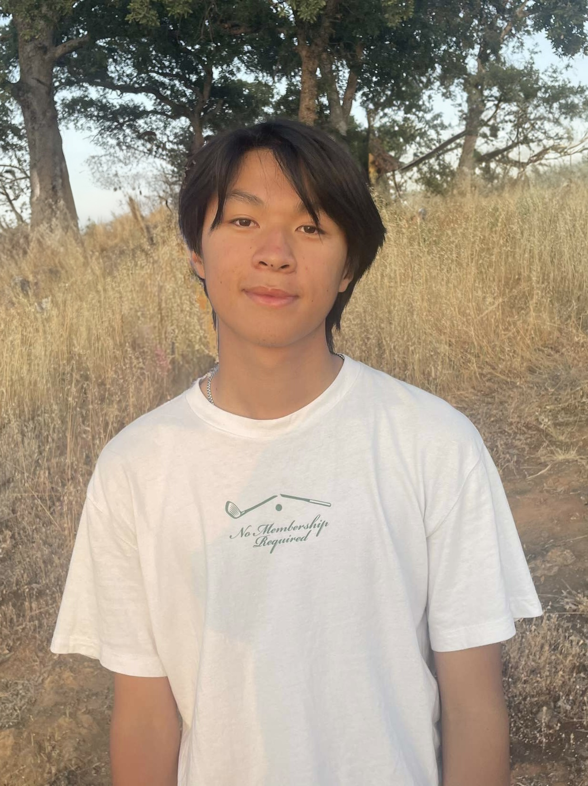
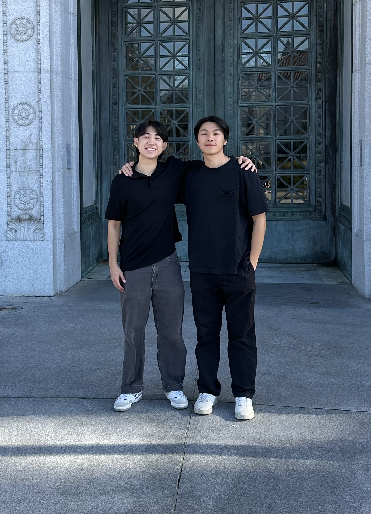
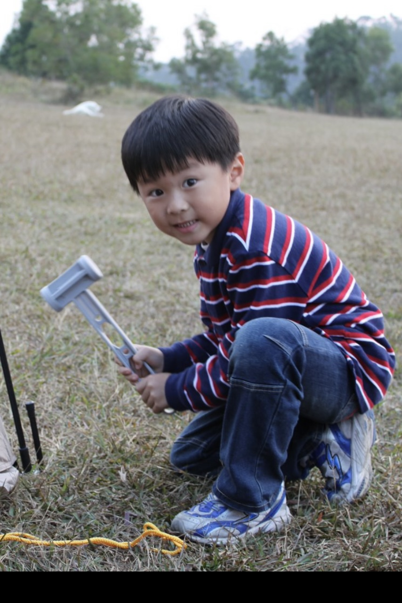

Hey again! 👋
I'm currently a student at University of California, Berkeley studying Computer Science and Data Science.
More About Me...
I'm Bo-Wei(Warren) Chang, studying computer science and data science at UC Berkeley. I've always been very interested about technology and its potential to make this world a better place. Whether it’s developing innovative software solutions or exploring the potential of AI and machine learning, I am driven by a deep passion to use technology as a force for good.
Outside of school and work, I really enjoy playing golf and video games. Golf is a sport that challenges me to think strategically and stay calm under pressure, which are skills that translate well into my work and school. Video games, on the other hand, fuel my creativity and problem-solving skills. Whether I’m on the golf course or immersed in a game, I’m always looking for ways to push myself, learn new things, and have fun along the way!
Experience
Software Engineer Intern • June 2025 - August 2025
Designed and implemented a Retrieval-Augmented Generation (RAG) pipeline using LangGraph to translate Oracle SQL queries into Trino SQL, enabling seamless migration from a traditional Oracle-based data lakehouse to a Trino-powered architecture.Developed error-handling mechanisms and evaluation metrics to assess translation quality, achieving 97% execution accuracy and 93% result accuracy, significantly reducing manual query rewriting effort during migration.
Project Manager/Tech Lead • January 2025 - May 2025
Led the development of a customizable report generation platform used for generating ESOP insights. Scoped UI and backend architecture, implemented a CI/CD pipeline to transform Snowflake-driven API endpoints into AWS Lambda functions, and configured API Gateway routing. Managed code quality and collaboration through GitLab workflows for efficient deployment.
External Vice President • May 2025 - Present
Led a team of 12 product managers and 30+ designers and developers to deliver projects for a variety of startups. Managed everything from planning and execution to keeping timelines on track, while also helping bring in new client work and making sure our team was matched with the right projects.
Software Developer • January 2024 - May 2025
Collaborates with a team of developers to build and maintain full-stack web applications for high-growth startups and campus organizations. Utilizes modern web technologies such as React.js, Node.js, and MongoDB to create scalable, responsive, and user-friendly applications. Engages in the complete development cycle from concept to deployment, ensuring code quality, performance optimization, and alignment with client needs.
Software Engineer • August 2024 - December 2024
Contributed to the development of a document editing platform that supports secure file upload, parsing, and user authentication. Implemented REST APIs with MongoDB and S3, integrated Google OAuth for user access, and built a file ingestion pipeline using LlamaParse to extract structured data from formats like PDF, PPTX, and HTML.
Software Engineer • June 2024 - December 2024
Enhanced a worksheet creation tool by implementing a PDF parsing pipeline using PyPDF2, PDFMiner, and NLTK. Integrated Polotno SDK into the React-based frontend to enable dynamic editing, and added support for editable imports from Google Slides and PDFs via Adobe Extract API. Built automated publishing pipelines using social media APIs.
Software Engineer Intern • May 2024 - August 2024
Built a resume intelligence system integrating RAG pipelines and vector search. Retrieved and preprocessed resume data from Lever, embedded using Voyage AI, and stored in Pinecone for semantic search. Enabled ranked candidate matching with justification, improving accuracy and efficiency in hiring workflows.
Software Engineer Intern • January 2024 - May 2024
Developed a personalized video generation system using React, Node.js, and Remotion. Parsed structured JSON feedback to dynamically render highlight videos, and deployed a real-time video streaming pipeline using Google Pub/Sub to support low-latency content delivery.
Fullstack Developer • June 2023 - January 2024
Led the redesign and functional upgrade of the client dashboard, significantly improving site performance and user experience. Utilized React.js to develop a responsive frontend architecture and managed backend databases using SQL, integrating APIs for data fetching and uploading.
Machine Learning Engineer Intern • June 2023 - August 2023
Worked on training custom datasets for traffic signal recognition, manually labeling over 4000 images using Roboflow. Implemented the model using YOLOv7, achieving an accuracy rate of 88.15%.